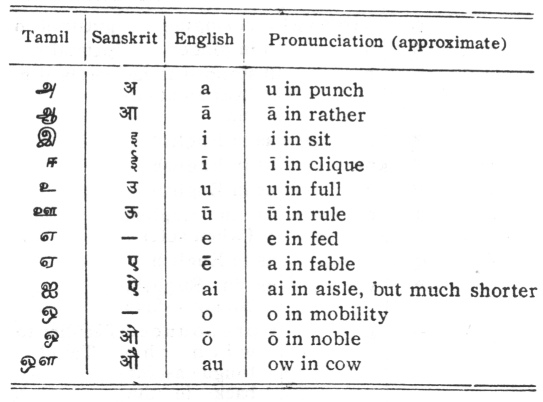
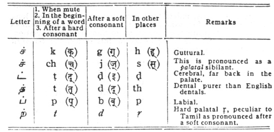
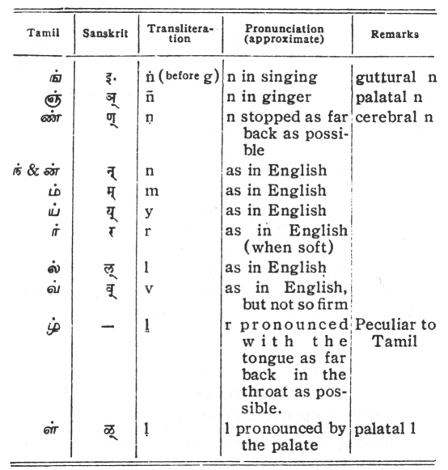

Hymns of the Tamil Saivite Saints, by F. Kingsbury and G.P. Phillips, [1921], at
APPENDIX II
SYSTEM OF TRANSLITERATION AND PRONUNCIATION OF TAMIL LETTERS

CONSONANTS
NḄ.—The Tamil alphabet is not fully phonetic as are the Sanskrit and the other Dravidian alphabets. Several letters indicate different sounds in different connections.


Sanskrit words, unless they have become modified by long Tamil usage, as, for example, in the author's name Māṇikka Vāsahar, are transliterated according to Sanskrit pronunciation, on the system used in other books in this series, the Sanskrit alphabet being represented as follows:—
|
k |
kh |
g |
gh |
ṅ |
|
ch |
chh |
j |
jh |
ñ |
|
ṭ |
ṭh |
ḍ |
ḍh |
ṇ |
|
t |
th |
d |
dh |
n |
|
p |
ph |
b |
bh |
m |
|
y |
r |
1 |
y |
|
|
ś |
sh |
s |
h |
|
|
ṛi |
ṁ |
ḥ |
|
|